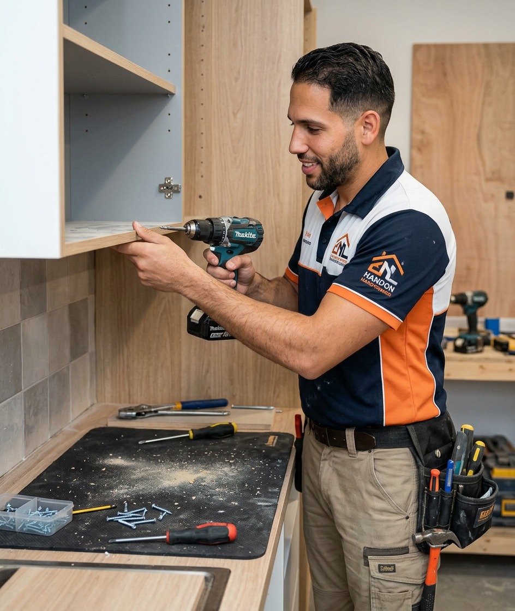

Reparaciones del hogar
Puertas, persianas, enchufes, grifos, silicona, pequeños desperfectos y arreglos pendientes.
Manitas a domicilio
Reparaciones, montaje, pintura, pequeños arreglos, fontanería básica, electricidad básica y mantenimiento para viviendas, locales, comunidades y pisos turísticos.

Servicios
Una web pensada para captar clientes que necesitan resolver algo concreto: rápido, claro y con contacto directo.
Puertas, persianas, enchufes, grifos, silicona, pequeños desperfectos y arreglos pendientes.
Muebles, estanterías, cortinas, lámparas, cuadros, espejos, soportes de TV y accesorios.
Habitaciones, paredes sueltas, techos, repasos, humedades tratadas y acabados limpios.
Servicios para pisos turísticos, alquileres, comunidades, oficinas y locales comerciales.
Trabajos habituales
La mayoría de clientes no busca una gran reforma, busca alguien resolutivo para dejar la casa funcionando como debe.

Confianza
El objetivo es resolver el problema sin vueltas: valorar el trabajo, acordar el presupuesto y dejar la zona limpia al terminar.
Antes y después
Sustituye estas imágenes por fotos reales de trabajos terminados. En este tipo de negocio, la prueba visual genera mucha confianza.


Zona de trabajo
Edita esta sección con la zona real: por ejemplo Málaga, Torremolinos, Benalmádena, Fuengirola y alrededores. Cuanto más concreta sea la zona, mejor funcionará para búsquedas locales.
Consultar disponibilidadOpiniones
"Rápido, puntual y muy limpio. Me montó varios muebles y dejó todo perfecto." Cliente particular
"Nos resolvió varios arreglos del piso antes de entregarlo al inquilino." Propietario de vivienda
"Buen trato, presupuesto claro y solución práctica. Muy recomendable." Comercio local
Contacto
Puedes escribir por WhatsApp, llamar o usar este formulario para preparar un mensaje con los datos básicos.